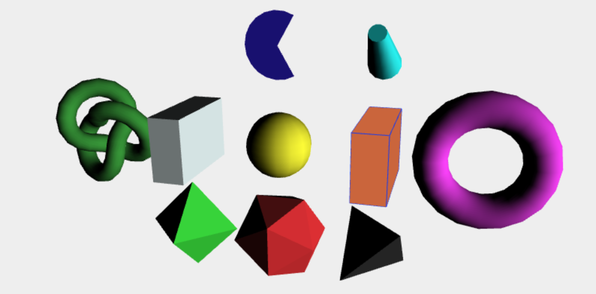

three.js中创建物体，比如一条线，需要如下函数：new THREE.Line( geometry, material );
geometry: 几何体
material: 材质
这是创建物体[mesh]必须的。Geometry主要是存储物体的顶点信息，threejs中提供了一些固定的形状，省去我们一个个固定顶点的工作量。
常见几何体
立方体，平面，球体，圆柱体，四面体，八面体，文字等。
立方体
THREE.CubeGeometry(width, height, depth, widthSegments, heightSegments, depthSegments) 前三个就是x，y，z方向上的长度。后三个是各自反向上的面分段，默认为1。
对于立方体，默认位置是其几何中心在坐标原点。
平面
THREE.PlaneGeometry(width, height, widthSegments, heightSegments)
width是x方向上的长度；height是y方向上的长度；后两个参数同样表示分段
如果想让让平面在别的方向上，可以进行旋转。
球体
THREE.SphereGeometry(radius, segmentsWidth, segmentsHeight, phiStart, phiLength, thetaStart, thetaLength)
在图形底层中，并没有曲线，是通过多个折线近似构成曲线。所以segmentsWidth, segmentsHeight(纬度上的切片数)|width(经度上的切片数)设的越大越接近球体。
phiStart表示经度开始的弧度；phiLength表示经度跨过的弧度；thetaStart表示纬度开始的弧度；thetaLength表示纬度跨过的弧度。
phi打头的就是代表水平方向。theta就是在垂直方向。
圆形
THREE.CircleGeometry(radius, segments, thetaStart, thetaLength)
同理，segments越大，越接近于圆。
圆台
THREE.CylinderGeometry(radiusTop, radiusBottom, height, radiusSegments, heightSegments, openEnded)
openEnded表示是否没有顶面和底面。默认为false(有顶面和底面)。
正四面体
多面体的参数，都是半径 & detail。半径是外接球半径，detail是细节层次，一般可以省略。
|
|
正八面体
|
|
正20面体
|
|
甜甜圈
THREE.TorusGeometry(150, 50, 10, 20)
第一个甜甜圈整个半径，第二个参数:管道半径，后面分别对应两者的半径。需要把两个半径调大，甜甜圈看着就光滑了。
打结版的甜甜圈
THREE.TorusKnotGeometry(radius, tube, radialSegments, tubularSegments, p, q, heightScale)
p和q是控制其样式的参数，一般可以缺省， heightScale: z轴上的缩放。
边框
boxHelper
|
|
边框不跟随物体旋转
edgesHelper
边框跟随
|
|
各种形状的展示：

代码参考： https://github.com/MissSweety/threejs/blob/master/js/geometry.js